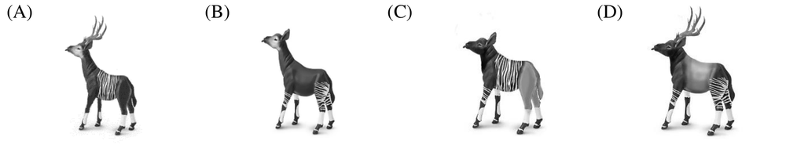

先讀文章、作答下方的題目，再展開後面的「看答案、依據句與逐段中譯」和「這一篇的生字表」。也可以到互動練習線上作答，交卷後自動批改。
第 1 段The okapi is a mammal living above the equator in one of the most biodiverse areas in central Africa. The animal was unknown to the western world until the beginning of the 20th century, and is often described as half-zebra, half-giraffe, as if it were a mixed-breed creature from a Greek legend. Yet its image is prevalent in the Democratic Republic of Congo—the only country in the world where it is found living in the wild. The okapi is to Congo what the giant panda is to China or the kangaroo to Australia.
第 2 段Although the okapi has striped markings resembling those of zebras’, it is most closely related to the giraffe. It has a long neck, and large, flexible ears. The face and throat are greyish white. The coat is a chocolate to reddish brown, much in contrast with the white horizontal stripes and rings on the legs and white ankles. Overall, the okapi can be easily distinguished from its nearest relative. It is much smaller (about the size of a horse), and shares more external similarities with the deer than with the giraffe. While both sexes possess horns in the giraffe, only males bear horns in the okapi.
第 3 段The West got its first whiff of the okapi in 1890 when Welsh journalist Henry Morton Stanley had puzzled over a strange “African donkey” in his book. Other Europeans in Africa had also heard of an animal that they came to call the “African unicorn.” Explorers may have seen the fleeting view of the striped backside as the animal fled through the bushes, leading to speculation that the okapi was some sort of rainforest zebra. Some even believed that the okapi was a new species of zebra. It was only later, when okapi skeleton was analyzed, that naturalists realized they had a giraffe on their hands.
第 4 段In 1987, the Okapi Wildlife Reserve was established in eastern Congo to protect this rare mammal. But decades of political turbulence has seen much of the Congo’s natural resources spin out of the government’s control, and okapi numbers have fallen by 50 percent since 1995. Today, only 10,000 remain.
48.Which of the following is a picture of an okapi?

49.Which of the following descriptions is true about the okapi?
50.What does the word “whiff” most likely mean in the third paragraph?
51.Which of the following can be inferred about Henry Morton Stanley?
| 題號 | 官方答案 | 答對率 | 鑑別度 |
|---|---|---|---|
| 48 | (B) | 72% | 38 |
| 49 | (A) | 62% | 66 |
| 50 | (C) | 52% | 42 |
| 51 | (C) | 65% | 58 |
答對率與鑑別度出處：大考中心 108 學年度指定科目考試統計圖表：英文科答對率及鑑別度表
第 2 段The coat is a chocolate to reddish brown, much in contrast with the white horizontal stripes and rings on the legs and white ankles.
第 3 段the fleeting view of the striped backside
第 1 段Yet its image is prevalent in the Democratic Republic of Congo
第 1 段The okapi is to Congo what the giant panda is to China or the kangaroo to Australia.
第 3 段The West got its first whiff of the okapi in 1890 when Welsh journalist Henry Morton Stanley had puzzled over a strange
第 3 段Explorers may have seen the fleeting view of the striped backside
第 3 段Henry Morton Stanley had puzzled over a strange
第 1 段霍加狓是一種哺乳動物，生活在赤道以北、中非生物多樣性最豐富的地區之一。一直到 20 世紀初，西方世界才知道有這種動物。人們常形容牠半斑馬、半長頸鹿，好像牠是希臘神話裡由兩種動物合成的生物。然而，在剛果民主共和國，霍加狓的形象隨處可見，剛果也是世界上唯一有野生霍加狓的國家。霍加狓對剛果的意義，就像大貓熊之於中國，袋鼠之於澳洲。
第 2 段雖然霍加狓身上的條紋和斑馬很像，牠的親緣關係卻和長頸鹿最近。霍加狓的脖子很長，耳朵又大又靈活，臉和喉嚨是灰白色。身上的毛是巧克力色到紅棕色，和腿上白色的橫紋、環紋，以及白色的腳踝，形成強烈的對比。整體來說，霍加狓很容易和牠最近的親戚長頸鹿區分。霍加狓的體型小得多（大約和馬一樣大），外觀和鹿相似的地方，比和長頸鹿還多。長頸鹿公母都有角，霍加狓卻只有公的有角。
第 3 段西方第一次聽到霍加狓的一點風聲，是在 1890 年。威爾斯記者 Henry Morton Stanley 在他的書裡，提到一種讓他百思不解的奇怪「非洲驢」。其他在非洲的歐洲人也聽說過一種動物，後來他們把牠稱為「非洲獨角獸」。探險家看到的，可能只是這種動物逃進樹叢時，一閃而過的條紋臀部，於是有人猜測霍加狓是某種雨林斑馬，有些人甚至相信霍加狓是一種新的斑馬。一直到後來分析了霍加狓的骨骸，博物學家才發現，他們遇到的其實是長頸鹿家族的動物。
第 4 段1987 年，剛果東部設立了霍加狓野生動物保護區，保護這種稀有的哺乳動物。但是，數十年的政治動盪，讓剛果大部分的天然資源脫離了政府的掌控，霍加狓的數量從 1995 年以來減少了一半，如今只剩下一萬隻。
第 2 段Although the okapi has striped markings resembling those of zebras’, it is most closely related to the giraffe.
第 4 段But decades of political turbulence has seen much of the Congo’s natural resources spin out of the government’s control, and okapi numbers have fallen by 50 percent since 1995.